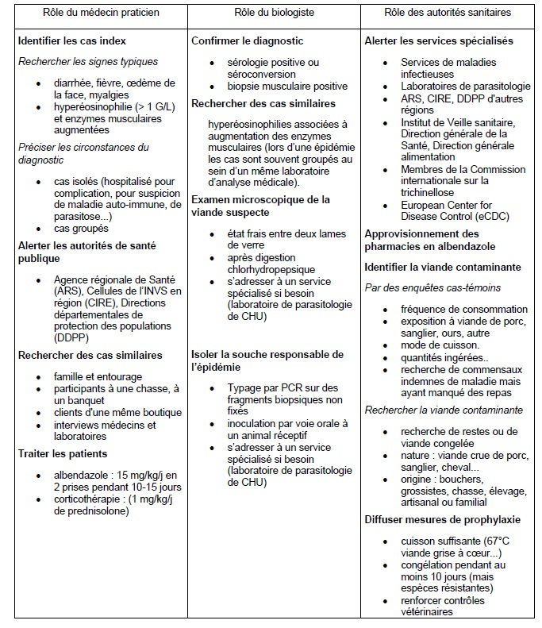

Accueil
Plus
La trichinellose
Cycle du Parasite
Espèces de trichine
Tests possibles à l'Hôpital Cochin
Conduite à tenir
Algorithme diagnostic
Feuille de déclaration des Cas
Les traitements
Liste des épidémies françaises
Publications du laboratoire
Liens Utiles
cat trichine.pdf
